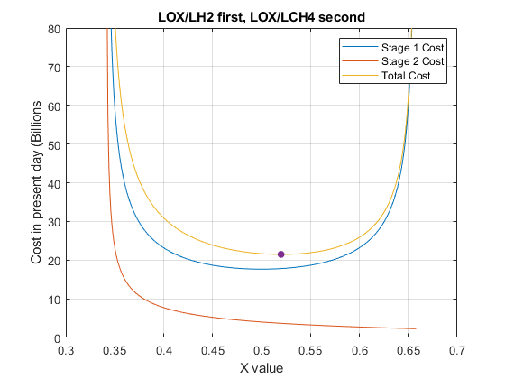

addpath('..')
Delta_1 = 0.08;
Delta_2 = 0.08;
Isp_1 = 327;
Isp_2 = 327;
m_PL = 26000;
X = 0:0.001:1;
X_length = 1001;
Stage1_cost = zeros(1,X_length);
Stage2_cost = zeros(1,X_length);
S = 1;
while S <= X_length
X_Position = X(S);
[stageCost_nr1, stageCost_nr2] = cost_function(Isp_1, Isp_2, X_Position, Delta_1, Delta_2);
Stage1_cost(S) = stageCost_nr1;
Stage2_cost(S) = stageCost_nr2;
S = S + 1;
end
Total_cost = Stage1_cost + Stage2_cost;
Minimum_Cost = inf;
Minimum_X = NaN;
S = 2;
while S <= X_length
if (Stage1_cost(S) > 0) && (Stage2_cost(S) > 0) && (Total_cost(S) < Minimum_Cost)
Minimum_Cost = Total_cost(S);
Minimum_X = X(S);
end
S = S + 1;
end
Stage1_cost = Stage1_cost / 1000;
Stage2_cost = Stage2_cost / 1000;
Total_cost = Total_cost / 1000;
Minimum_Cost = Minimum_Cost / 1000;
plot(X, Stage1_cost);
hold on;
plot(X, Stage2_cost);
plot(X, Total_cost);
plot(Minimum_X, Minimum_Cost, '.', 'MarkerSize',20)
ylim([0,80]);
xlabel('X value');
ylabel('Cost in present day (Billions');
title('LOX/LH2 first, LOX/LCH4 second');
legend('Stage 1 Cost', 'Stage 2 Cost', 'Total Cost');
grid on;
